操作・メンテナンス手順書 v1.1
作成者：尾崎大輔 ozaki@nippyo.co.jp
最終更新：2026-11-04
管理画面：https://keisemi.github.io/nippyo/admin/
公開サイト：https://keisemi.github.io/nippyo/
GitHubリポジトリ：https://github.com/keisemi/nippyo
日常の更新は、原則として次の管理画面から始めます。
https://keisemi.github.io/nippyo/admin/
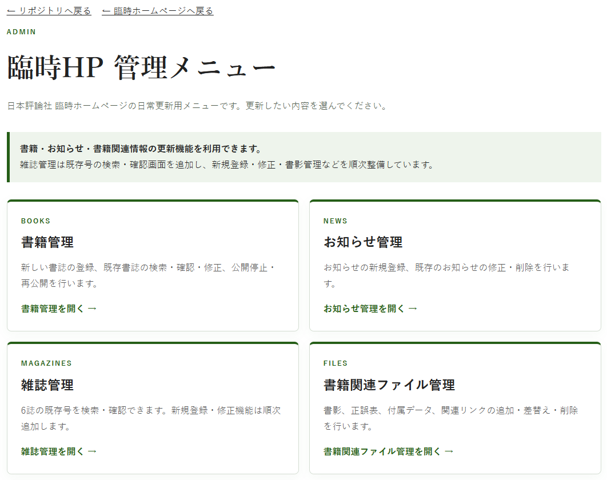
| やりたいこと | 開く画面 |
|---|---|
| 書籍の新規登録・修正・公開停止・再公開・削除 | 書籍管理 |
| 雑誌の新号登録・修正・公開／非公開・削除・雑誌書影 | 雑誌管理 |
| お知らせの新規登録・修正・公開停止・再公開・完全削除 | お知らせ管理 |
| 書籍の書影・正誤表・付属データ・関連リンク | 書籍関連ファイル管理 |
通常の更新では、CSV・JSON・HTMLを直接編集しません。GitHub Desktopも通常は使いません。
| 操作 | 意味 |
|---|---|
| 新規登録 | 新しい書誌・雑誌号・お知らせ等を追加する |
| 修正 | 既存データを残したまま内容を変更する |
| 公開停止／非公開 | データは残し、公開サイトには表示しない |
| 再公開 | 非公開のデータを再び公開する |
| 削除／完全削除 | 正本データそのものを削除する |
迷った場合は、削除ではなく公開停止／非公開を使います。
更新を実行するには、keisemi/nippyo
リポジトリで更新権限を持つGitHubアカウントが必要です。
更新する際には、必ず「日本評論社」のGitHubアカウント（https://github.com/nippyo）に、ブラウザでGitHubにログインした状態で操作してください。
日常更新では、次の2ページをブックマークしておくと便利です。
GitHubのリポジトリ画面やActions画面を普段から開く必要はありません。
通常の更新は、次の流れで行います。
管理画面で更新したい種類を選ぶ
↓
対象の書籍・雑誌号・お知らせ等を選ぶ
↓
必要な内容を入力・変更する
↓
GitHubの確認フォームを開く
↓
対象と入力内容を確認して送信する
↓
自動処理がデータ更新・公開を行う
↓
成功コメントを確認する
↓
公開サイトまたは管理画面で最終確認する管理画面からGitHubの確認フォームへ進むと、新しいタブが開きます。
管理画面から引き継がれた次のような識別情報は、原則として変更しません。
対象を間違えた場合は、フォーム上で識別情報を書き換えず、いったん閉じて管理画面から対象を選び直してください。
新規登録では、GitHubフォーム自体が最終登録内容の確認画面です。必須欄や、登録したいのに空欄になっている欄がないか確認してから送信します。
正常に処理が終わると、Issueに次のコメントが表示されます。
✅ 更新が完了しました。
公開サイトへの反映も自動確認できました。
その後、Issueは自動で閉じます。
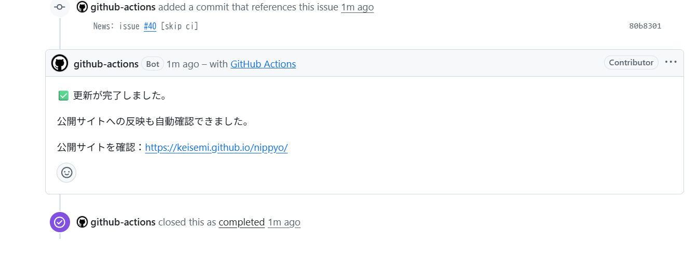
この表示まで出れば、自動更新処理は完了です。
最後に、内容そのものに誤りがないかを確認します。
失敗時は、Issueに次の趣旨のコメントが表示されます。
❌ 更新処理が完了しませんでした。
公開サイトへの反映完了を確認できていません。
このIssueのURLを管理担当者へ送ってください。Actions画面を確認する必要はありません。
この場合は、同じ申請を何度も送り直さず、IssueのURLを管理担当者へ送ってください。
管理画面トップから 「書籍管理」 を開きます。
https://keisemi.github.io/nippyo/admin/books/
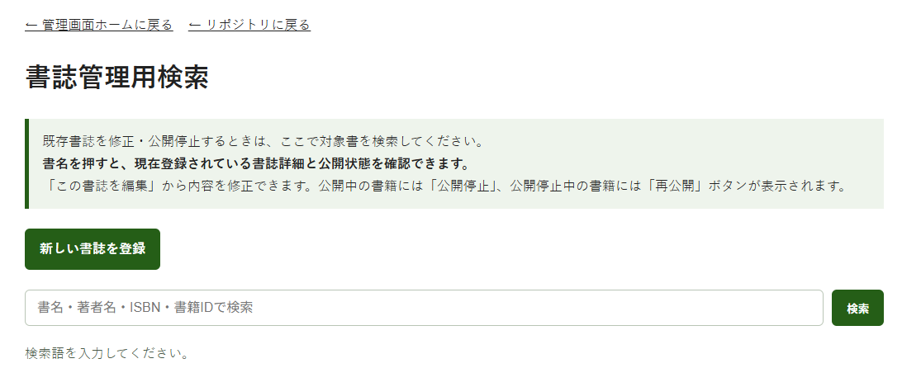
書名・著者名・ISBN・書籍IDなどで対象書籍を検索できます。
書籍管理画面上部の 「新しい書誌を登録」 を押します。
GitHubの新規登録フォームが新しいタブで開きます。
通常書籍の書籍IDは、登録処理の中で自動設定されます。
ISBNの商品番号5桁が書籍IDになります。
ISBN 978-4-535-54143-6
↓
書籍ID 54143N + 5桁の管理用IDが自動採番されます。
N09803雑誌の各号にも「書籍ID」がありますが、通常書籍とは決め方が異なります。雑誌については「10. 新しい雑誌号を登録する」を参照してください。
| 項目 | 入力ルール |
|---|---|
| 書名 | 必須 |
| 副題 | 副題（後） に入力 |
| 著者 | 複数の場合は | で区切る |
| ISBN | ハイフン付きで可 |
| Amazon ASIN | 任意。分かる場合のみ10桁 |
| 刊行年月 | 2026-10 のように入力 |
| 分野 | 複数の場合は | で区切る |
| 本体価格 | 数字のみ |
| 頁数 | 数字のみ |
| 内容紹介・目次 | 必要に応じて入力 |
内容紹介には、次の形式でリンクを入れられます。
本書のサポートサイト[【コチラ】](https://example.com/)をご利用ください。フォームを送信し、成功コメントと自動クローズを確認します。
通常書籍の新規登録は公開用データに反映されます。公開サイトにまだ出したくない場合は、登録後に「公開停止」を使用します。
書影・正誤表・付属データ・関連リンクは、書誌登録後に 「書籍関連ファイル管理」 から別途登録します。
トップページの 「新刊」欄は別途更新する必要がありません。
書誌データの刊行年月をもとに、自動的に表示内容が切り替わります。
したがって、更新担当者が行うのは 書誌登録・修正と刊行年月の確認 までです。
検索欄に書名などを入力して 「検索」 を押します。
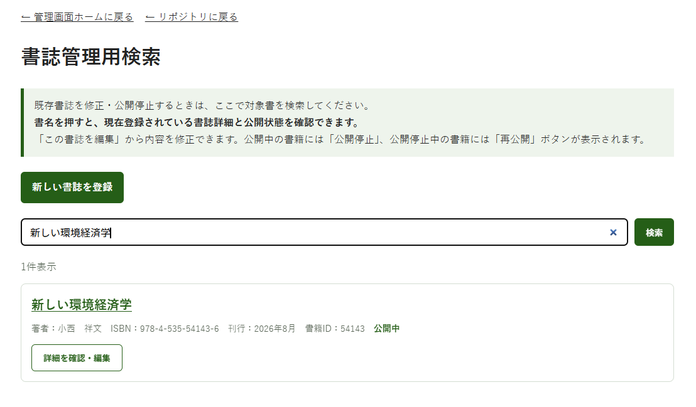
対象書籍が表示されたら、書名または 「詳細を確認・編集」 を押します。
似た書名を取り違えないよう、ISBN・書籍IDも確認してください。
詳細画面では、現在登録されている書誌情報と公開状態を確認できます。
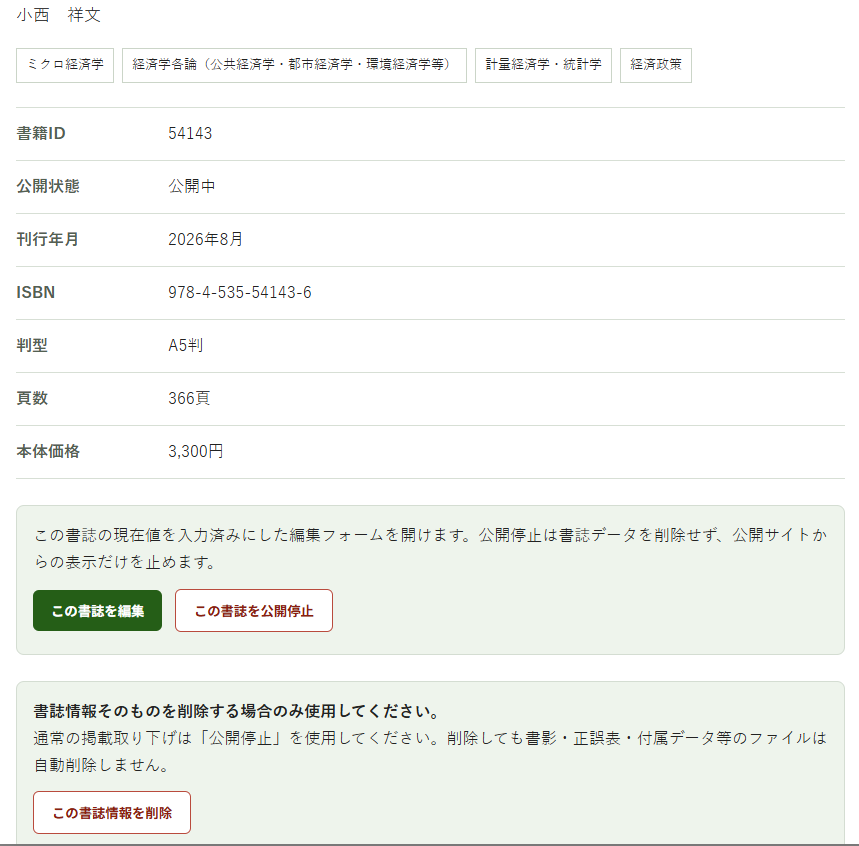
「この書誌を編集」 を押すと、現在値が入力済みの編集画面が開きます。
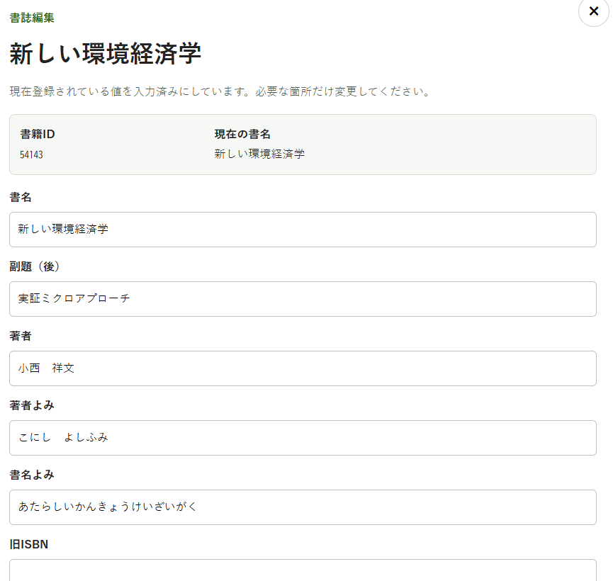
変更したい箇所だけ書き換えます。
既存の値を削除して空欄にしたい場合は、その欄の内容を消して空欄にします。
書影・正誤表・付属データ・関連リンクは、この書誌編集画面では変更しません。
編集後、「変更内容を確認する」 を押します。
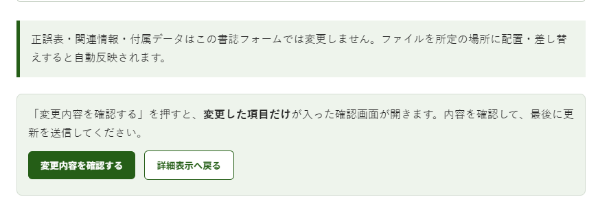
変更した項目だけが「変更前／変更後」で表示されます。
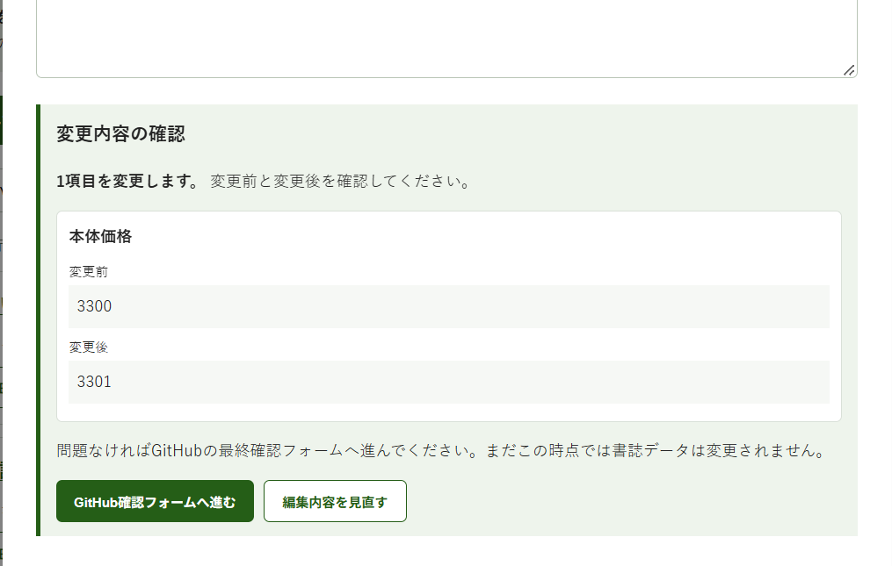
内容が正しければ 「GitHub確認フォームへ進む」 を押します。
この時点では、まだ書誌データは変更されていません。
一時的に公開サイトから取り下げたい場合は 「この書誌を公開停止」 を使います。
書誌データは削除されません。
公開停止すると、公開サイトの書籍検索・個別書誌ページ・トップページの新刊表示から対象書が表示されなくなります。
公開停止中の書籍には再公開ボタンが表示されます。
再公開すると、現在登録されている書誌データをそのまま使って公開状態へ戻ります。
削除は、誤登録・重複登録など、本当に不要な書誌だけに使用します。
通常の掲載取り下げには「公開停止」を使ってください。
削除時には、誤操作防止のため書籍IDを再入力し、削除確認にチェックします。
書誌情報を削除しても、書影・正誤表・付属データ等のファイルは自動削除されません。 必要な場合はそれぞれ別途削除します。
管理画面トップから 「雑誌管理」 を開きます。
https://keisemi.github.io/nippyo/admin/magazines/
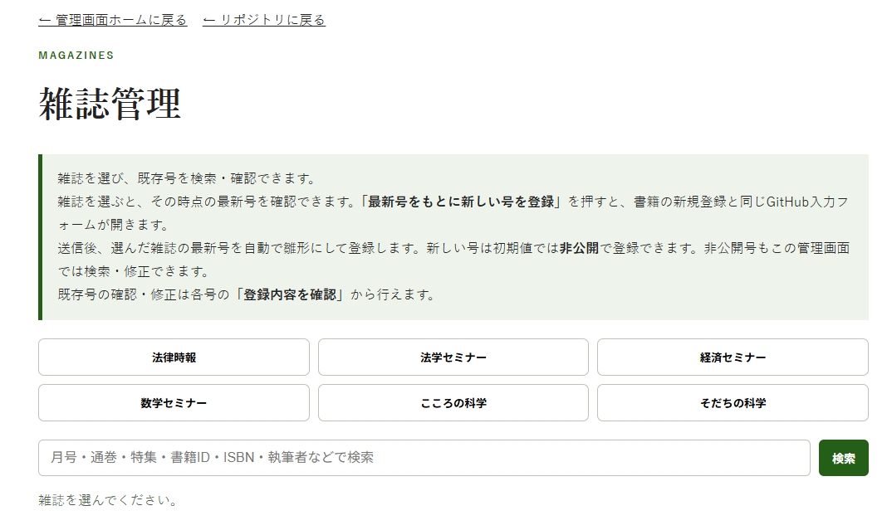
対象となる6誌から雑誌を選びます。
雑誌を選ぶと、最新号と既存号を確認できます。
雑誌の新号登録は、管理画面で次号登録を開始し、GitHubフォームで最終内容を確認して送信する流れです。
雑誌管理画面で対象誌を選び、最新号を確認します。
「最新号をもとに新しい号を登録」 を押すと、管理画面内に次号登録画面が開きます。
次号登録画面では、前号を雛形にしつつ、新号用の入力画面が表示されます。
雑誌の書籍IDは、通常書籍のようにISBN下5桁から決めるものではありません。通常は自動入力された候補をそのまま使います。
管理画面で 「登録内容を確認する」 を押すと、GitHubの新号登録フォームが開きます。
最終的に登録される内容は、このGitHubフォームに表示されている内容です。
特に次の項目を確認してください。
GitHubフォームに表示されている内容を確認し、必要な項目を入力して送信します。
GitHubフォームの 「公開状態」 が最終的な公開設定です。
初期値は 「非公開（登録だけする）」 です。
非公開で登録した号も管理画面には残るため、後から修正・公開できます。
雑誌コード(1)は必須です。手元の誌面情報や既存号の登録内容を確認し、正しいコードを入力してください。
分からない場合は推測せず、管理担当者に確認してください。
送信後、成功コメントとIssueの自動クローズを確認します。
対象号の 「登録内容を確認」 を開き、編集画面へ進みます。
現在値が表示されるので、必要な箇所だけ変更します。
変更内容の確認画面では、変更前／変更後を確認します。
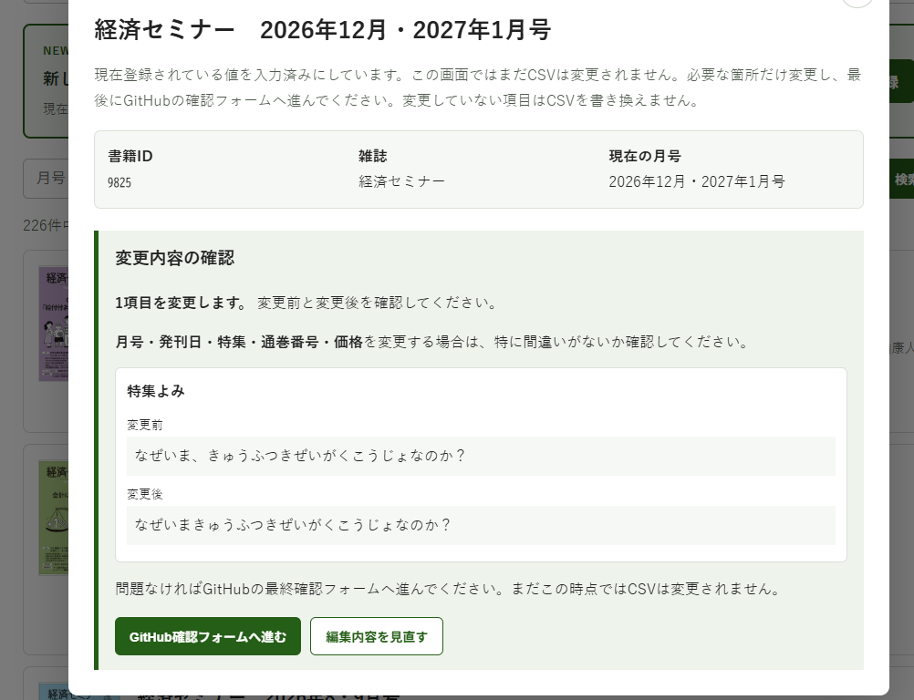
特に、月号・発刊日・特集・通巻番号・本体価格をよく確認してください。
掲載を一時的に止めたい場合は 非公開 にします。
書誌データ自体は残り、管理画面から引き続き確認・修正できます。
公開準備が整ったら再公開します。
誤登録・重複登録・テストデータなど、本当に不要な号だけに使用します。
通常の掲載取り下げでは削除せず、非公開にしてください。
雑誌号の書誌情報を削除しても、雑誌書影は自動削除されません。
雑誌管理画面で対象号を開き、書影管理から操作します。
使用できる形式：
1点、最大10MBです。
削除時は専用の削除確認フォームが開きます。
管理画面トップから 「お知らせ管理」 を開きます。
https://keisemi.github.io/nippyo/admin/news/
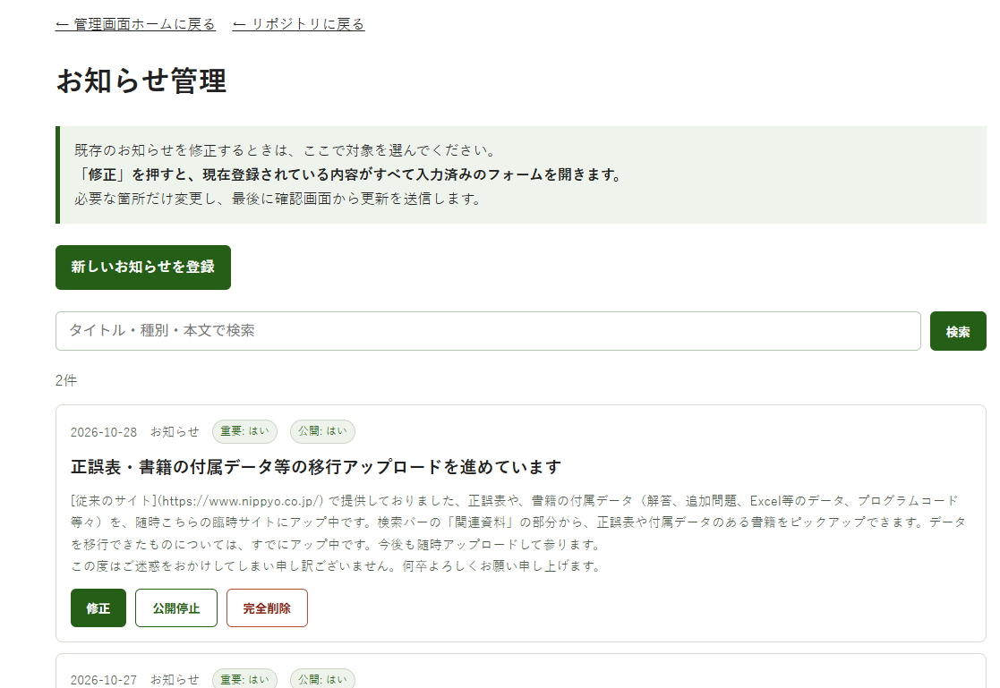
ここでは、新規登録・修正・公開停止・再公開・完全削除を行えます。
「新しいお知らせを登録」 を押します。
主な項目は次のとおりです。
| 項目 | 内容 |
|---|---|
| 日付 | 空欄なら当日 |
| 種別 | 空欄なら「お知らせ」 |
| タイトル | 新規登録では必須 |
| 本文 | 必要に応じて入力 |
| リンク先 | 必要に応じて入力 |
| 重要表示 | 必要に応じて「はい／いいえ」を選ぶ |
| 公開する | 「はい／いいえ」を選ぶ |
新規登録では、重要表示と公開状態をできるだけ明示的に選んでから送信してください。
送信後、成功コメントと自動クローズを確認します。
対象のお知らせの 「修正」 を押します。
現在の登録内容を確認し、必要な箇所だけ変更します。
本文やリンクを空にするなど、既存値を削除する変更は、管理画面・フォームの案内に従って行ってください。
一時的に掲載を止めたい場合は 「公開停止」 を使います。
データは削除されず、管理画面には残ります。
公開停止中のお知らせには 「再公開」 が表示されます。
現在の内容のまま公開サイトに戻せます。
「完全削除」 は、正本データそのものから消す操作です。
一時的な掲載停止には使用しません。
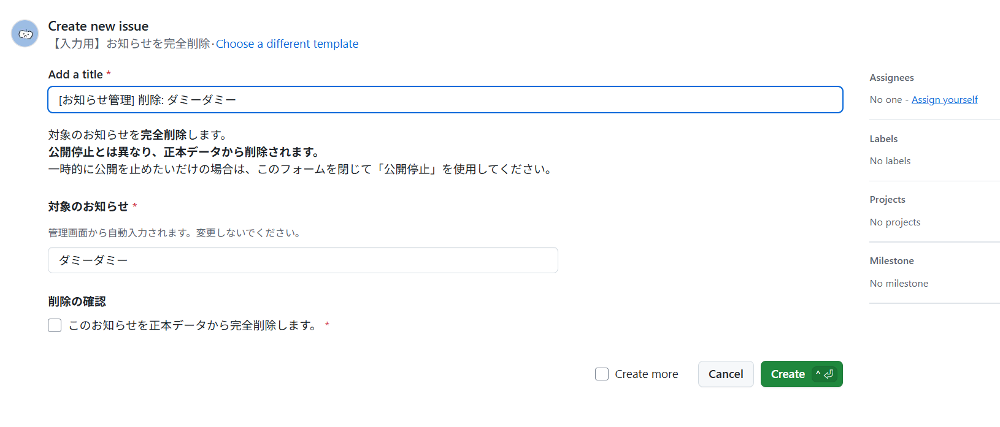
対象のお知らせが正しいことを確認し、削除確認にチェックして送信します。
管理画面トップから 「書籍関連ファイル管理」 を開きます。
https://keisemi.github.io/nippyo/admin/files/
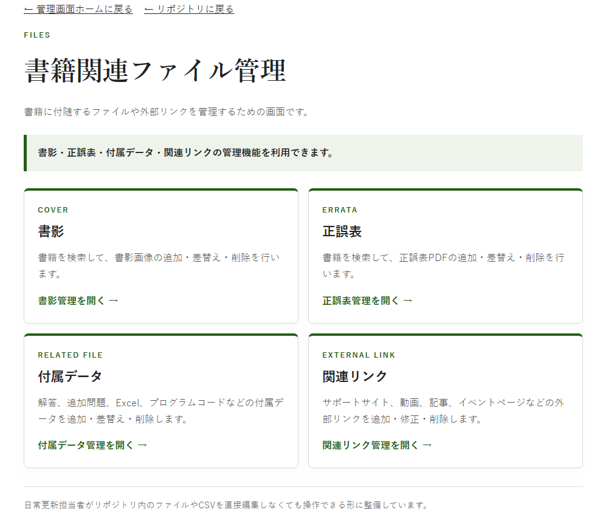
ここから次の5種類を管理します。
いずれも、まず対象を検索してから操作します。立ち読みPDFだけは、書籍だけでなく雑誌号も同じ管理画面から管理できます。
追加・差替えに使える形式：
1点、最大10MBです。
削除しても、書誌情報そのものは削除されません。
正誤表は PDF 1点、最大25MBです。
管理画面の表示は次の意味です。
追加・差替え・削除は専用フォームから行います。
付属データは 1点、最大25MBです。
主な対応形式：
複数ファイルを配布する場合は、ZIPにまとめて1点として登録してください。
書籍に関連する外部ページを登録します。
例：
主な入力項目は、リンク名・説明・URLです。
URLは https:// または http://
から始まるものを入力します。
複数リンクがある場合も、1件ずつ追加・修正・削除できます。
立ち読みPDFは、書籍・雑誌号の両方を同じ管理画面から管理します。
https://keisemi.github.io/nippyo/admin/files/preview/
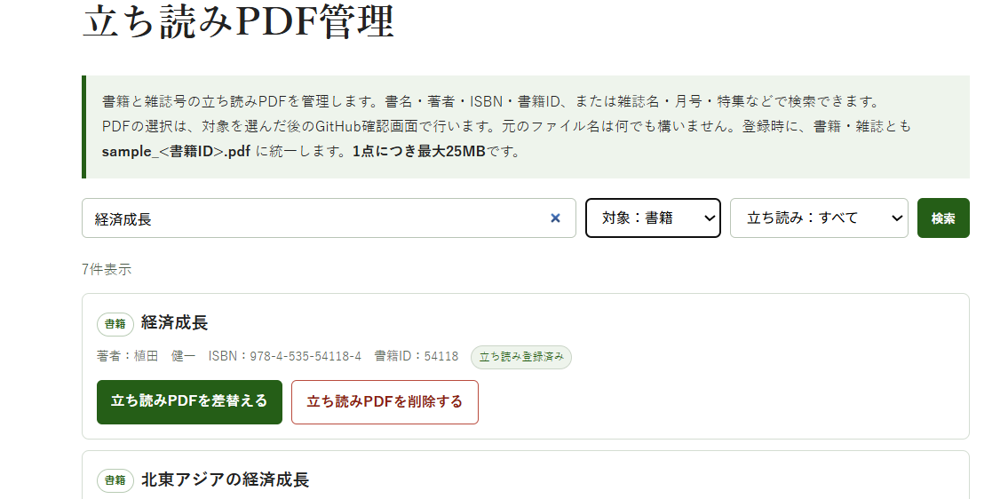
対象を「書籍」「雑誌」で絞り込み、書名・著者・ISBN・書籍ID、または雑誌名・月号・特集などで検索できます。
登録できるのは PDF 1点、最大25MBです。元のファイル名は任意で、登録時に書籍・雑誌とも sample_<書籍ID>.pdf に自動で統一されます。
未登録の場合は「立ち読みPDFを追加する」、登録済みの場合は「立ち読みPDFを差替える」「立ち読みPDFを削除する」から操作します。
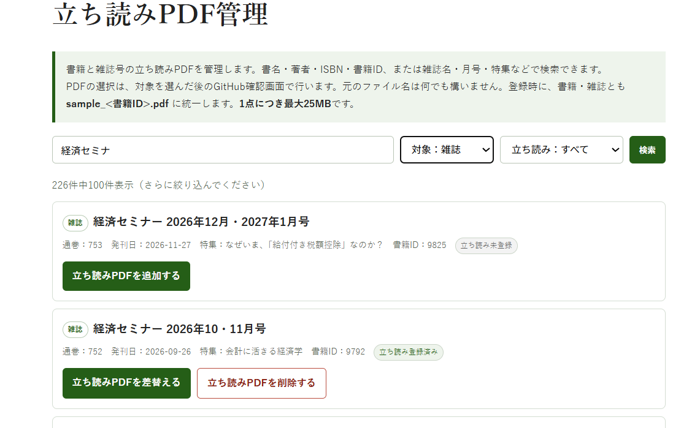
GitHub Issue FormでPDFを選択・送信した後の流れは、正誤表や付属データなどのファイル管理と同様です。自動処理が完了し、成功コメントとIssueの自動Closeを確認したら、公開サイトも確認します。
立ち読みPDFが登録されると、公開サイトの書籍・雑誌の詳細ポップアップで、書影のすぐ下に【立ち読み】が表示されます。クリックするとPDFが新しいタブで開きます。PDF未登録の場合は【立ち読み】自体が表示されません。
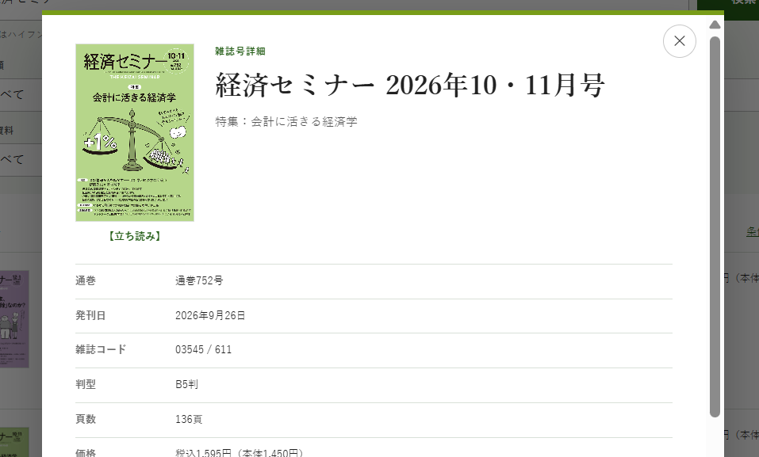
GitHubフォーム上で書籍ID・雑誌ID等を書き換えず、いったん閉じて管理画面から選び直します。
削除せず、公開停止／非公開にします。
同じ申請を繰り返さず、失敗したIssueのURLを管理担当者へ送ります。
推測して入力せず、確認してから送信します。
更新成功後も古い表示に見える場合は、まず強制再読み込みします。
Windows：
Ctrl + F5それでも変わらない場合は、シークレットウィンドウ等で確認してください。
非常に長い内容紹介・目次などを複数同時に修正すると、管理画面からGitHubフォームへ渡す情報が長くなりすぎる場合があります。
管理画面で「長すぎる」旨が表示された場合は、内容紹介だけ、目次だけ、というように分けて更新してください。
まずサイズと形式を確認してください。
| 種類 | 最大サイズ |
|---|---|
| 書籍書影 | 10MB |
| 雑誌書影 | 10MB |
| 正誤表PDF | 25MB |
| 付属データ | 25MB |
| 立ち読みPDF | 25MB |
付属データが複数ある場合はZIPにまとめます。
通常の更新では、次の操作は行いません。
data/*.csv を1件修正のために直接編集するdocs/data/*.json や docs/data/*.js
を直接編集する次の作業は、日常更新とは分けて管理者が行います。
管理者がHTML・画像・コード等を直接変更する場合の基本手順です。
GitHub Desktopを開く
↓
Fetch origin
↓
必要なら Pull origin
↓
変更するファイルだけ差し替える
↓
Changesで想定外の変更がないか確認
↓
Commit
↓
Push origin
↓
自動再構築・公開が成功したことを確認
↓
公開サイトを確認リポジトリ全体を古いZIPで丸ごと上書きしないでください。
このサイトでは、正本データを更新し、公開用ファイルを自動生成する方式を採っています。
代表例：
正本
data/book_search_master.csv
data/news.csv
data/magazines/*.csv
↓ 自動処理
公開・検索用
docs/data/*.json
docs/data/*.js通常更新では、公開用JSONやJavaScriptを直接修正しません。
仕組みの変更時に扱う主な場所は次です。
scripts/
.github/workflows/
.github/ISSUE_TEMPLATE/新しい担当者は、お知らせを使って一連の流れを練習すると安全です。
これで、管理画面・GitHub確認フォーム・自動更新・公開停止／再公開・完全削除の一連の操作を確認できます。